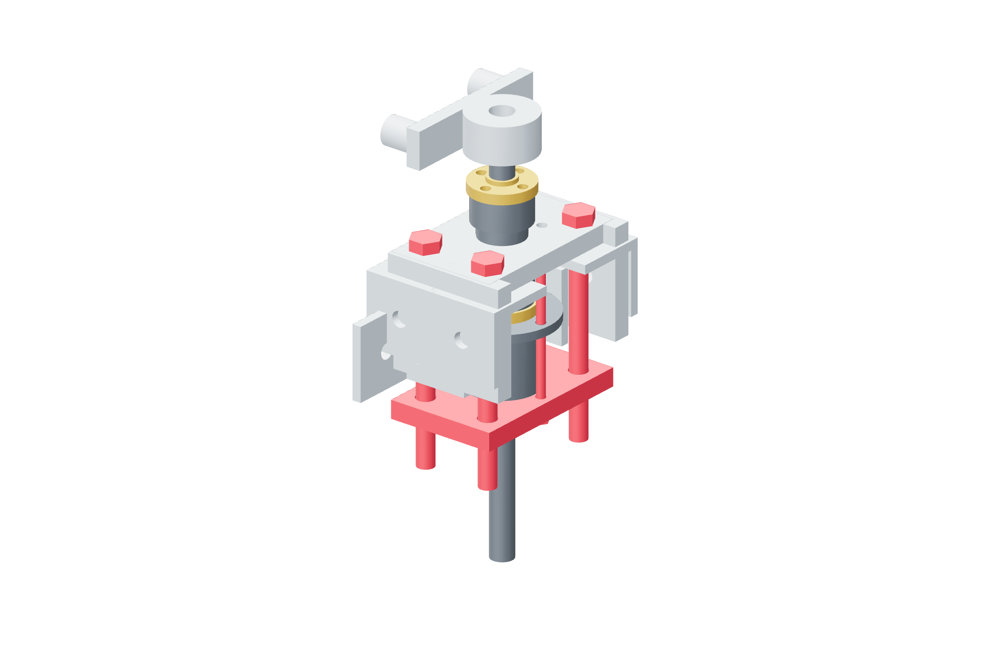

Retention / preload88 / 179
Set and lock the spring seats
A measured soft spring provides axial preload. Four metal post nuts hold the seat square; the three axes use different breakaway windows.
AddPer retained axis: 8 M6 seat jam nuts · washers · spring-rate record
Tools / setupWrenches · measured spring grading · supported frame

- Grade each received friction spring in the controlled gauge fixture; record its actual force/deflection over the used range.
- Set the seat parallel to the bulkhead, advancing opposite post nuts in small equal increments.
- Start with light drag and hand-turn the screw through a full revolution. The spring remains seated without approaching solid height.
- Lock paired nuts at each post while holding its setting. Complete the full-turn torque procedure after the redirect is characterized.
Ready when
The spring/seat remain centered, the steel washer follows the entire rotation and the four locked post settings remain unchanged. A skewed seat, coil bind or changing post setting fails preload. Correct the metal arrangement and regrade before assigning a holding torque.